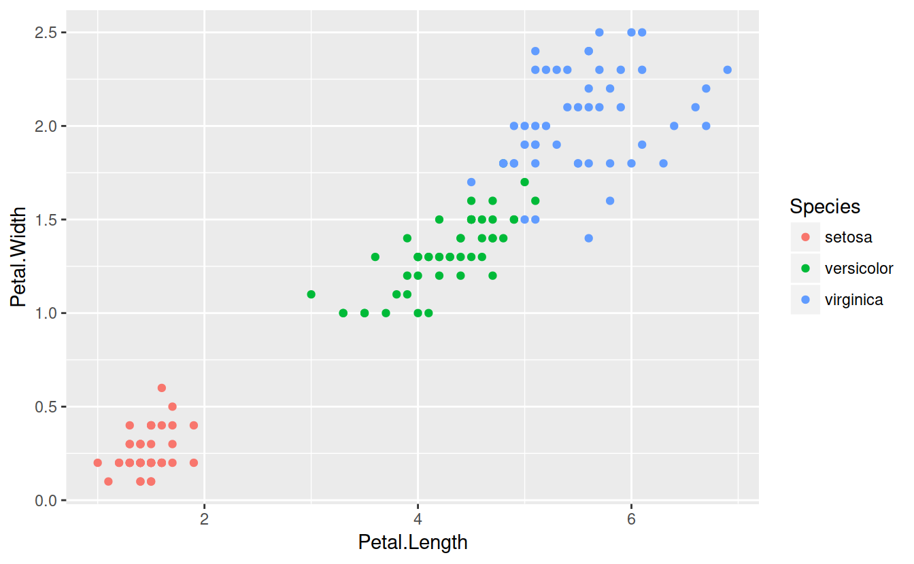
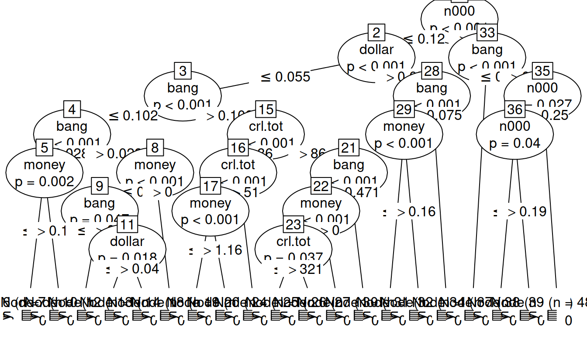
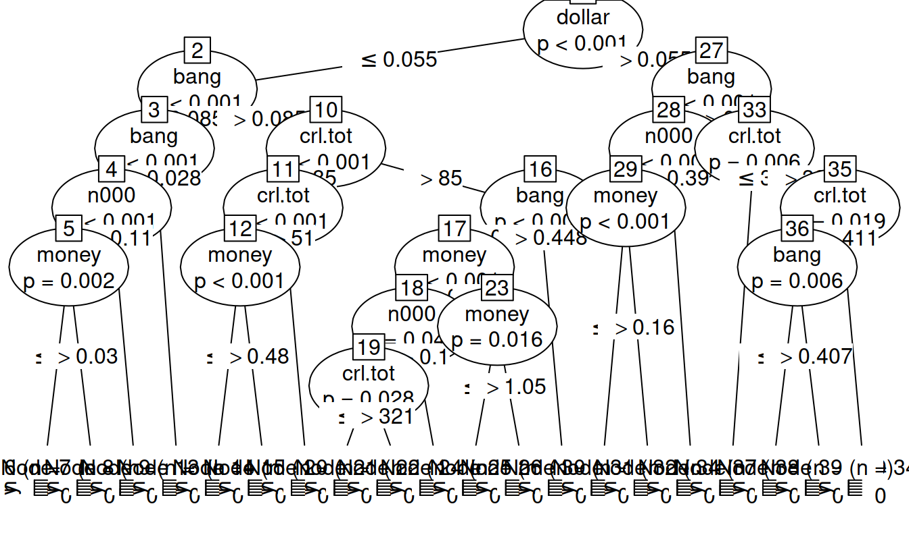

24.1 CART
# Data
summary(iris)
## Sepal.Length Sepal.Width Petal.Length Petal.Width
## Min. :4.300 Min. :2.000 Min. :1.000 Min. :0.100
## 1st Qu.:5.100 1st Qu.:2.800 1st Qu.:1.600 1st Qu.:0.300
## Median :5.800 Median :3.000 Median :4.350 Median :1.300
## Mean :5.843 Mean :3.057 Mean :3.758 Mean :1.199
## 3rd Qu.:6.400 3rd Qu.:3.300 3rd Qu.:5.100 3rd Qu.:1.800
## Max. :7.900 Max. :4.400 Max. :6.900 Max. :2.500
## Species
## setosa :50
## versicolor:50
## virginica :50
##
##
## 
The idea behind CART is to divide the predictor space (petal width and length) with a straight line and fit simple models on either side of the line.
Mathematically, consider predictors \(X_j\) and some split point \(s\) that splits the predictor space into two half-spaces \[L_{j, s} = \lbrace X |X_j \le s \rbrace \text{ and } R_{j, s} = \lbrace X |X_j > s\rbrace\].
The idea is to split on the varible and at the location which minimizes some loss function: \[min_{j, s}\lbrace loss(R_{j, s}) + loss(L_{j, s}) \rbrace\] For classification problems, the easiest model is ``majority wins’’ and the loss function is the number of misclassificed observations. For regression, the easiest model is the mean model, and the loss function is squared error loss.
# Grow a tree
classTree = tree(Species ~ Sepal.Length + Sepal.Width + Petal.Length + Petal.Width, data = iris)summary(classTree)
##
## Classification tree:
## tree(formula = Species ~ Sepal.Length + Sepal.Width + Petal.Length +
## Petal.Width, data = iris)
## Variables actually used in tree construction:
## [1] "Petal.Length" "Petal.Width" "Sepal.Length"
## Number of terminal nodes: 6
## Residual mean deviance: 0.1253 = 18.05 / 144
## Misclassification error rate: 0.02667 = 4 / 150
table(predict(classTree, type = 'class'), iris$Species)
##
## setosa versicolor virginica
## setosa 50 0 0
## versicolor 0 47 1
## virginica 0 3 49Trees, left unattended, can easily overfit. Loss can always be reduced to zero by cutting the predictor space up enough. The two major ways to hadle this is the Bayesian approach of putting priors on trees, or a penalized loss function approach, which adds a penalty for more complex trees (mode leaves).
It’s common practice to grow a tree too large and then prune it back, rather than just stop growing the tree when it gets too complex. This explores tree space more thoroughly. Once we have our overgrown tree we remove terminal nodes and try to minimize a penalized loss function. For a tree with \(T\) nodes labelled \(N_t\) for \(t \in 1, \ldots, T\) we want to minimize
\[k T + \sum_{t = 1}^{T}loss(N_t)\] where k is a parameter controlling the penalty on the tree size. Harsher penalties lead to smaller trees.
# Prune that tree!
prune = prune.tree(classTree, method = 'misclass')
prune
## $size
## [1] 6 4 3 2 1
##
## $dev
## [1] 4 4 6 50 100
##
## $k
## [1] -Inf 0 2 44 50
##
## $method
## [1] "misclass"
##
## attr(,"class")
## [1] "prune" "tree.sequence"
# Cross validation
cvTree = cv.tree(classTree, method = 'misclass')
cvTree
## $size
## [1] 6 4 3 2 1
##
## $dev
## [1] 6 6 8 98 119
##
## $k
## [1] -Inf 0 2 44 50
##
## $method
## [1] "misclass"
##
## attr(,"class")
## [1] "prune" "tree.sequence"plot(prune$size, prune$dev, main = "Scree/Elbow Plot", xlab = "Number of Leaves", ylab = "Misclassifications", type = 'b')
points(cvTree$size, cvTree$dev, type = 'b', pch = 2)
legend("topright", pch = 1:2, legend = c("Pruned", "Cross Validated"), bty = 'n')
Other methods use a significance test approach to determining whether or not to split. For each variable, the model performs a univariate hypothesis test and splits on the variable with the lowest p-value. If no null hypotheses can be rejected, the tree stops splitting.
ciTree = ctree(Species ~ Sepal.Length + Sepal.Width + Petal.Length + Petal.Width, data = iris)
ciTree
##
## Conditional inference tree with 4 terminal nodes
##
## Response: Species
## Inputs: Sepal.Length, Sepal.Width, Petal.Length, Petal.Width
## Number of observations: 150
##
## 1) Petal.Length <= 1.9; criterion = 1, statistic = 140.264
## 2)* weights = 50
## 1) Petal.Length > 1.9
## 3) Petal.Width <= 1.7; criterion = 1, statistic = 67.894
## 4) Petal.Length <= 4.8; criterion = 0.999, statistic = 13.865
## 5)* weights = 46
## 4) Petal.Length > 4.8
## 6)* weights = 8
## 3) Petal.Width > 1.7
## 7)* weights = 46
A main advantage of trees is their ease of interpretability and use.
library(DAAG)
data(spam7)
head(spam7)
## crl.tot dollar bang money n000 make yesno
## 1 278 0.000 0.778 0.00 0.00 0.00 y
## 2 1028 0.180 0.372 0.43 0.43 0.21 y
## 3 2259 0.184 0.276 0.06 1.16 0.06 y
## 4 191 0.000 0.137 0.00 0.00 0.00 y
## 5 191 0.000 0.135 0.00 0.00 0.00 y
## 6 54 0.000 0.000 0.00 0.00 0.00 yspamTree = ctree(yesno ~., data = spam7)
spamTree
##
## Conditional inference tree with 20 terminal nodes
##
## Response: yesno
## Inputs: crl.tot, dollar, bang, money, n000, make
## Number of observations: 4601
##
## 1) n000 <= 0.12; criterion = 1, statistic = 515.579
## 2) dollar <= 0.055; criterion = 1, statistic = 393.255
## 3) bang <= 0.102; criterion = 1, statistic = 129.53
## 4) bang <= 0.028; criterion = 1, statistic = 29.259
## 5) money <= 0.13; criterion = 0.998, statistic = 12.684
## 6)* weights = 2154
## 5) money > 0.13
## 7)* weights = 24
## 4) bang > 0.028
## 8) money <= 0; criterion = 1, statistic = 23.253
## 9) bang <= 0.034; criterion = 0.953, statistic = 7.03
## 10)* weights = 19
## 9) bang > 0.034
## 11) dollar <= 0.04; criterion = 0.982, statistic = 8.779
## 12)* weights = 170
## 11) dollar > 0.04
## 13)* weights = 15
## 8) money > 0
## 14)* weights = 21
## 3) bang > 0.102
## 15) crl.tot <= 86; criterion = 1, statistic = 64.968
## 16) crl.tot <= 51; criterion = 1, statistic = 24.737
## 17) money <= 1.16; criterion = 1, statistic = 19.282
## 18)* weights = 330
## 17) money > 1.16
## 19)* weights = 8
## 16) crl.tot > 51
## 20)* weights = 184
## 15) crl.tot > 86
## 21) bang <= 0.471; criterion = 1, statistic = 37.344
## 22) money <= 0; criterion = 1, statistic = 20.151
## 23) crl.tot <= 321; criterion = 0.963, statistic = 7.487
## 24)* weights = 152
## 23) crl.tot > 321
## 25)* weights = 58
## 22) money > 0
## 26)* weights = 43
## 21) bang > 0.471
## 27)* weights = 180
## 2) dollar > 0.055
## 28) bang <= 0.075; criterion = 1, statistic = 35.434
## 29) money <= 0.16; criterion = 1, statistic = 27.115
## 30)* weights = 138
## 29) money > 0.16
## 31)* weights = 67
## 28) bang > 0.075
## 32)* weights = 436
## 1) n000 > 0.12
## 33) bang <= 0; criterion = 1, statistic = 21.155
## 34)* weights = 49
## 33) bang > 0
## 35) n000 <= 0.25; criterion = 0.973, statistic = 8.025
## 36) n000 <= 0.19; criterion = 0.96, statistic = 7.343
## 37)* weights = 43
## 36) n000 > 0.19
## 38)* weights = 21
## 35) n000 > 0.25
## 39)* weights = 489
Let’s predict an email!
How well does it predict?
spamTreeConfusionMatrix = table(predict(spamTree, spam7), spam7$yesno)
spamTreeConfusionMatrix
##
## n y
## n 2683 503
## y 105 1310# Let's do a simple cross validation
inSampleProp = .85
inSampleIndicator = sample(c(TRUE, FALSE), size = nrow(spam7), replace = TRUE, prob = c(inSampleProp, 1 - inSampleProp))
trainingSet = spam7[inSampleIndicator,]
testingSet = spam7[!inSampleIndicator,]
trainingTree = ctree(yesno ~., data = trainingSet)
trainingTree
##
## Conditional inference tree with 20 terminal nodes
##
## Response: yesno
## Inputs: crl.tot, dollar, bang, money, n000, make
## Number of observations: 3906
##
## 1) dollar <= 0.055; criterion = 1, statistic = 474.384
## 2) bang <= 0.085; criterion = 1, statistic = 107.911
## 3) bang <= 0.028; criterion = 1, statistic = 22.15
## 4) n000 <= 0.11; criterion = 1, statistic = 16.097
## 5) money <= 0.03; criterion = 0.998, statistic = 12.534
## 6)* weights = 1794
## 5) money > 0.03
## 7)* weights = 23
## 4) n000 > 0.11
## 8)* weights = 31
## 3) bang > 0.028
## 9)* weights = 161
## 2) bang > 0.085
## 10) crl.tot <= 85; criterion = 1, statistic = 70.548
## 11) crl.tot <= 51; criterion = 1, statistic = 19.938
## 12) money <= 0.48; criterion = 1, statistic = 16.228
## 13)* weights = 293
## 12) money > 0.48
## 14)* weights = 7
## 11) crl.tot > 51
## 15)* weights = 169
## 10) crl.tot > 85
## 16) bang <= 0.448; criterion = 1, statistic = 36.142
## 17) money <= 0; criterion = 1, statistic = 17.308
## 18) n000 <= 0.1; criterion = 0.955, statistic = 7.13
## 19) crl.tot <= 321; criterion = 0.972, statistic = 7.991
## 20)* weights = 142
## 19) crl.tot > 321
## 21)* weights = 54
## 18) n000 > 0.1
## 22)* weights = 10
## 17) money > 0
## 23) money <= 1.05; criterion = 0.984, statistic = 8.964
## 24)* weights = 62
## 23) money > 1.05
## 25)* weights = 7
## 16) bang > 0.448
## 26)* weights = 181
## 1) dollar > 0.055
## 27) bang <= 0.049; criterion = 1, statistic = 39.757
## 28) n000 <= 0.39; criterion = 1, statistic = 22.383
## 29) money <= 0.16; criterion = 1, statistic = 22.929
## 30)* weights = 114
## 29) money > 0.16
## 31)* weights = 53
## 28) n000 > 0.39
## 32)* weights = 35
## 27) bang > 0.049
## 33) crl.tot <= 39; criterion = 0.994, statistic = 10.79
## 34)* weights = 16
## 33) crl.tot > 39
## 35) crl.tot <= 411; criterion = 0.981, statistic = 8.653
## 36) bang <= 0.407; criterion = 0.994, statistic = 10.723
## 37)* weights = 220
## 36) bang > 0.407
## 38)* weights = 189
## 35) crl.tot > 411
## 39)* weights = 345
Now we can do a more fair out of sample calculation
# In-sample
inSampleMat = table(predict(trainingTree, trainingSet), trainingSet$yesno)
inSampleMat
##
## n y
## n 2287 440
## y 69 1110